Melamina RH 15 mm · 1 sola lámina de 2,15 × 2,44 m · para armar en casa
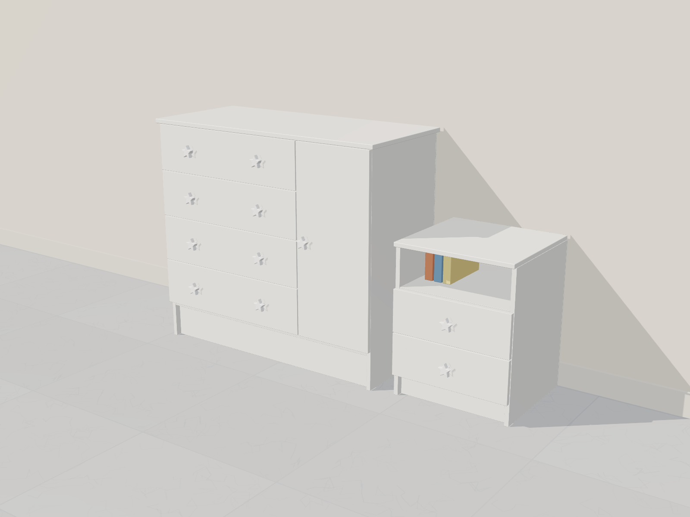
Medidas en milímetros. Sierra de 4 mm y 10 mm de refilado por borde. Precios de madecentro.com (sept. 2026) marcados con 💲; el resto es estimado.
| Producto | Cant. | Para qué | Precio |
|---|---|---|---|
| 💲 Tablero aglomerado melamina blanco RH Primadera 15 mm, 2,15 × 2,44 m (SKU AGPMRBS215) | 1 | Todas las piezas de los dos muebles | $266.410 |
| HDF 3 mm blanco (2440 × 1830 mm o el formato que tengan) | 1 | Fondos y bases de cajón | ≈ $55.000 – $85.000 |
| Servicio de corte (47 piezas) + enchape canto PVC blanco 19 o 22 mm (≈ 31 m) | — | Se pide con la lámina ("tableros a la medida") | ≈ $125.000 – $245.000 |
| 💲 Riel corredera extensión total carga media 38 kg (Mobile) — 35 cm | 4 pares | Cajones cómoda (incluye 12 tornillos/par) | desde $5.917 el par |
| 💲 Mismo riel — 30 cm | 2 pares | Cajones mesa | desde $5.917 el par |
| 💲 Bisagra de cazoleta cierre lento Bonuit, aplicación parche | 1 par | Puerta cómoda (incluye tornillos) | $3.137 |
| 💲 Tornillo de ensamble 6 × 2" zincado, caja × 100 | 1 caja | Carcasas y cajas de cajón (se usan ≈ 90) | $6.419 |
| Tornillo 6 × 1" (caja pequeña) | ≈ 40 | Frentes de cajón y sobre de la cómoda | ≈ $5.000 |
| 💲 Cantonera 19 × 12 mm + tornillos 6 × 5/8" | 8 | 4 tapa mesa · 2 zócalo cómoda · 2 anclaje a la pared | $296 c/u |
| Pines de repisa 5 mm · puntillas 3/4" · 2 tacos 6 mm con tornillo | 4 · ≈150 · 2 | Repisa, fondos, anclaje | ≈ $8.000 |
| Pomos (se pueden reusar las estrellas de la cómoda vieja) | 11 | 8 cajones cómoda, 1 puerta, 2 cajones mesa | $0 si se reusan |
Tablero: aglomerado melamínico RH (resistente a la humedad del ambiente, no al agua directa), 15 mm, laminado por las dos caras, formato 2150 × 2440 mm. Uso de la lámina: 84 %. Cómoda Mesa
"Canto en los bordes de" indica la longitud de cada borde que se enchapa. Ejemplo: C2 lleva canto en su borde de 785 (frente) y en el de 380 (el que toca el piso, para protegerlo al trapear).
| ID | Pieza | Cant. | Medida (mm) | Canto en los bordes de (mm) |
|---|---|---|---|---|
| C1 | Sobre (tapa) | 1 | 900 × 400 | 900 + 900 + 400 + 400 |
| C2 | Costado | 2 | 785 × 380 | 785 + 380 |
| C3 | Piso | 1 | 840 × 380 | 840 |
| C4 | División | 1 | 637 × 380 | 637 |
| C5 | Repisa (puerta) | 1 | 360 × 256 | 256 |
| C6 | Travesaño superior | 2 | 840 × 80 | — |
| C7 | Zócalo | 1 | 840 × 118 | 840 |
| C8 | Frente de cajón | 4 | 590 × 160 | 590 + 590 + 160 + 160 |
| C9 | Puerta | 1 | 649 × 277 | 649 + 649 + 277 + 277 |
| C10 | Costado de cajón | 8 | 350 × 110 | 350 |
| C11 | Frente/fondo interno de cajón | 8 | 513 × 110 | 513 |
| ID | Pieza | Cant. | Medida (mm) | Canto en los bordes de (mm) |
|---|---|---|---|---|
| M1 | Tapa | 1 | 400 × 373 | 400 + 400 + 373 + 373 |
| M2 | Costado | 2 | 492 × 358 | 492 + 358 |
| M3 | Piso | 1 | 370 × 358 | 370 |
| M4 | Repisa del nicho | 1 | 370 × 358 | 370 |
| M5 | Zócalo | 1 | 370 × 70 | 370 |
| M6 | Travesaño trasero | 1 | 370 × 80 | — |
| M7 | Frente de cajón | 2 | 397 × 141 | 397 + 397 + 141 + 141 |
| M8 | Costado de cajón | 4 | 300 × 100 | 300 |
| M9 | Frente/fondo interno de cajón | 4 | 314 × 100 | 314 |
| ID | Pieza | Cant. | Medida (mm) |
|---|---|---|---|
| H1 | Cómoda · Fondo | 1 | 870 × 785 |
| H2 | Cómoda · Base de cajón | 4 | 543 × 350 |
| H3 | Mesa · Fondo | 1 | 492 × 400 |
| H4 | Mesa · Base de cajón | 2 | 344 × 300 |
Total de canto ≈ 31.2 m (pide ~34 m con desperdicio).
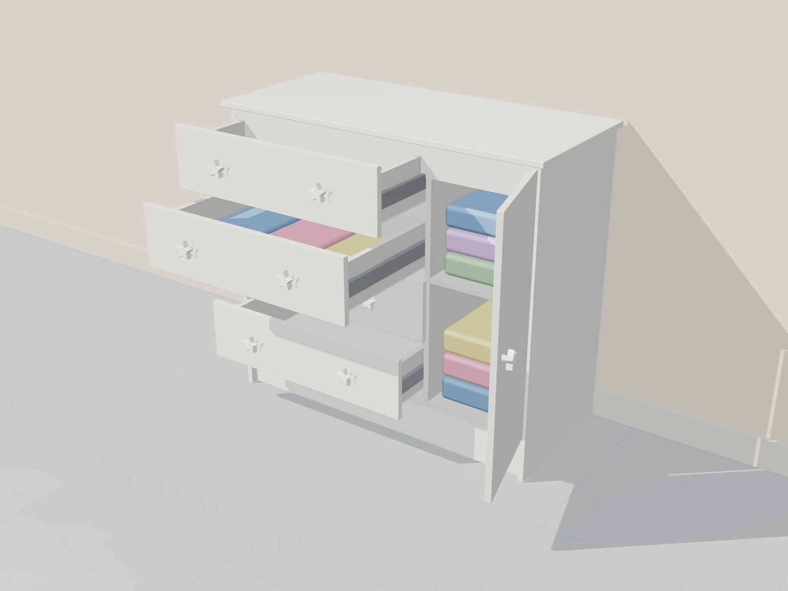
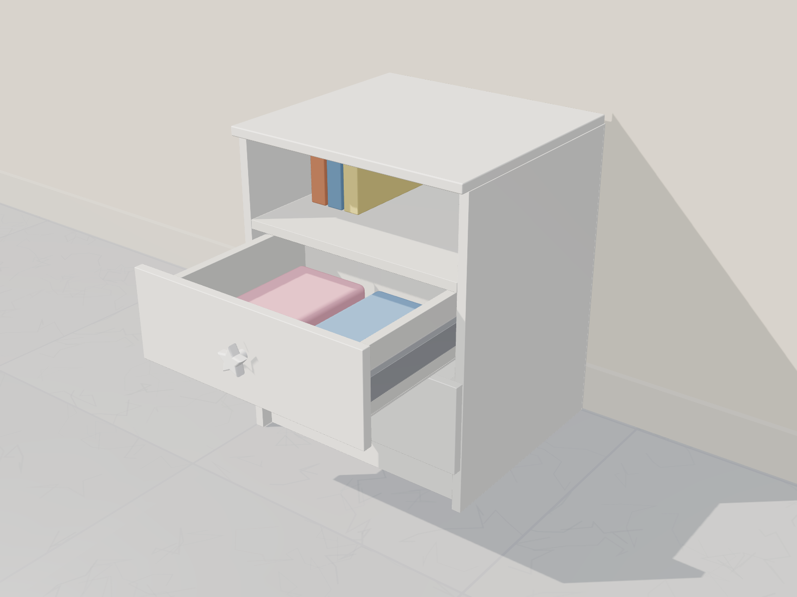
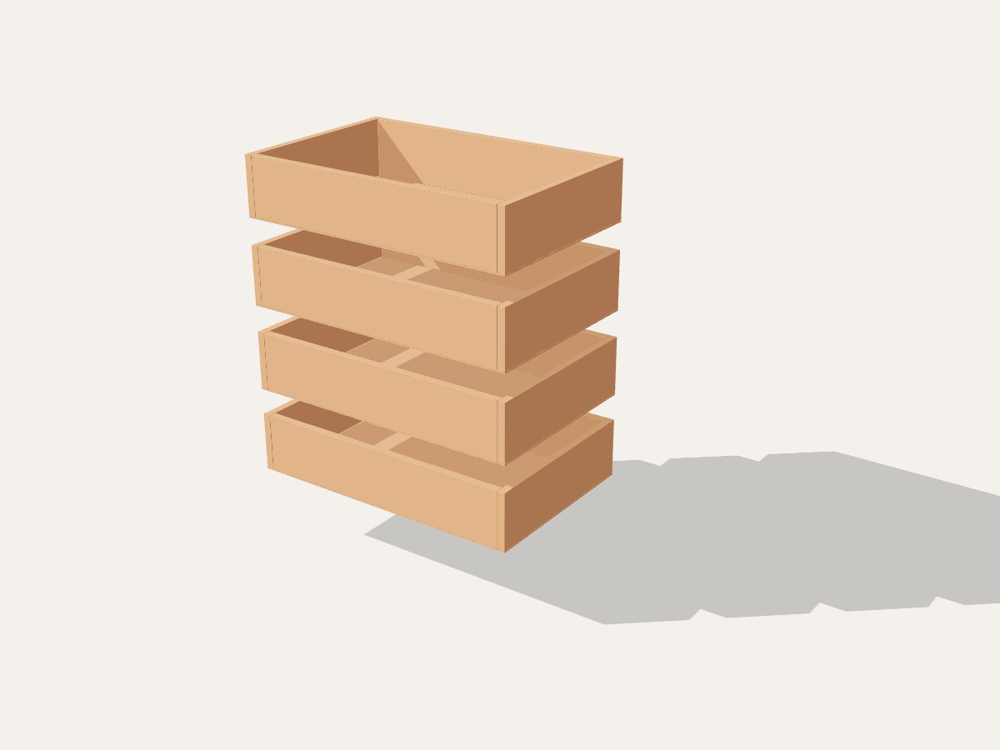
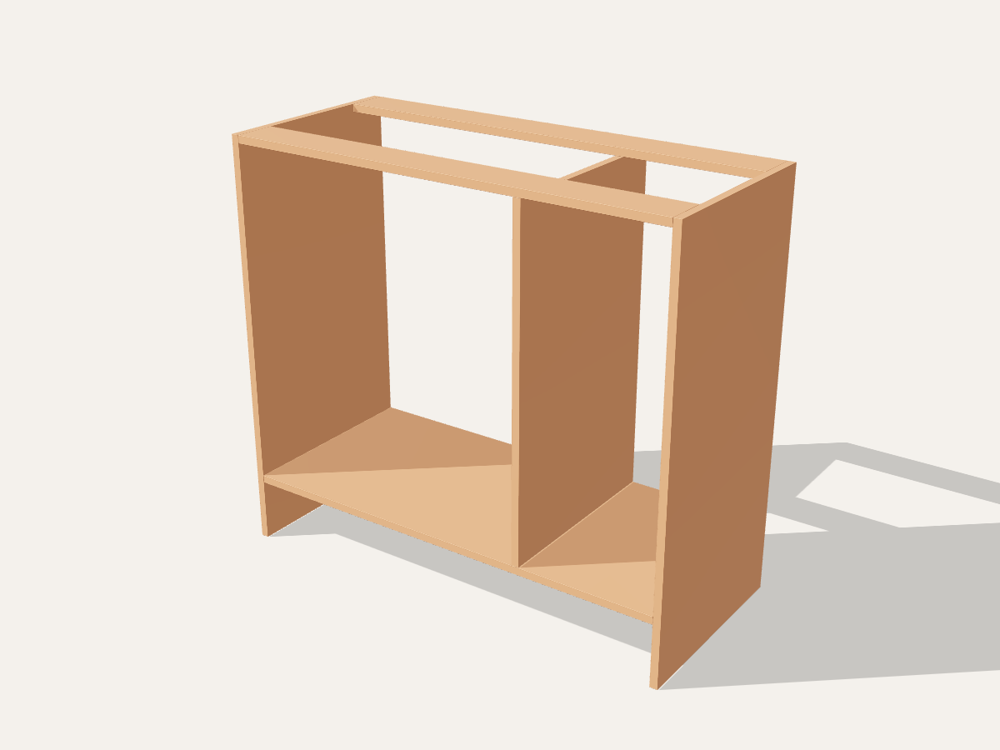
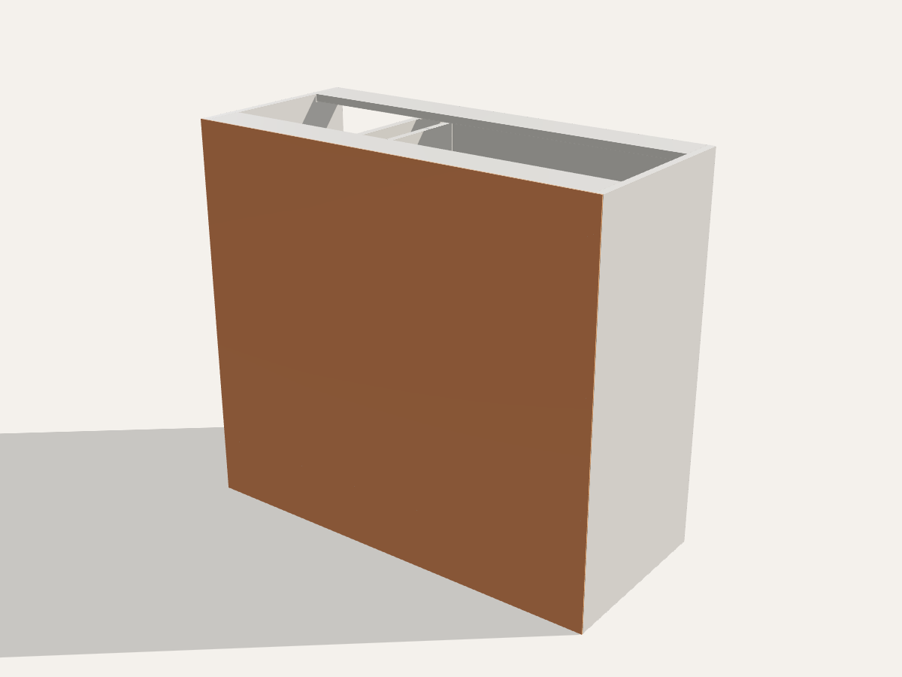
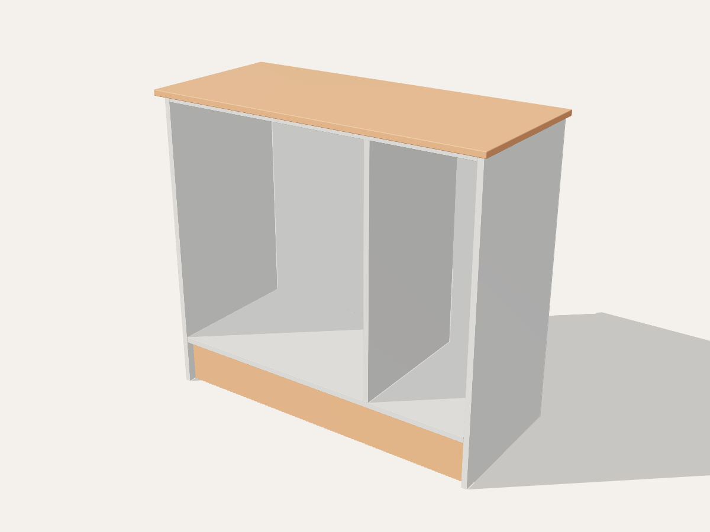
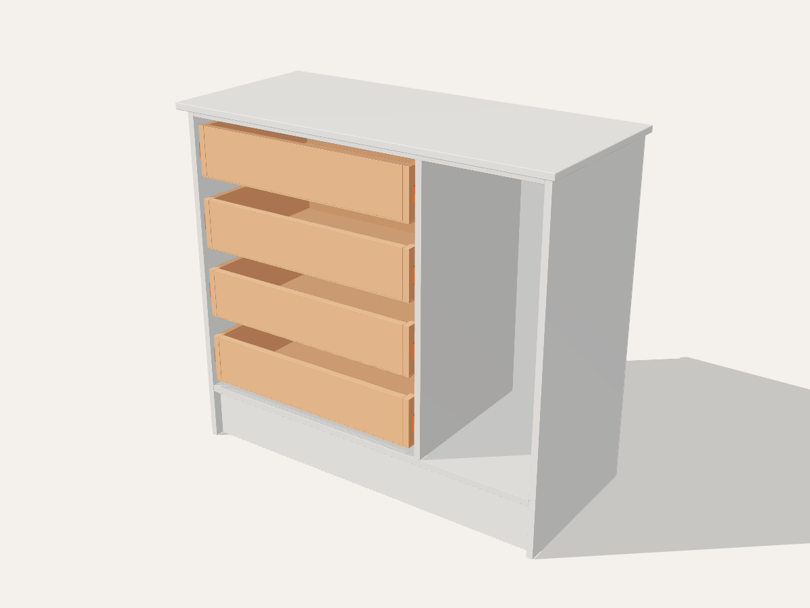
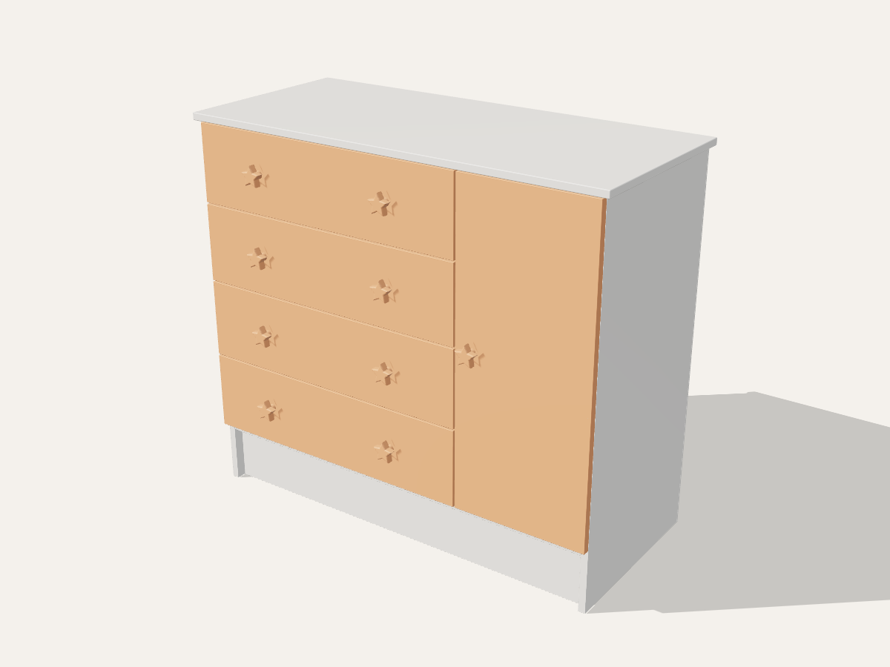
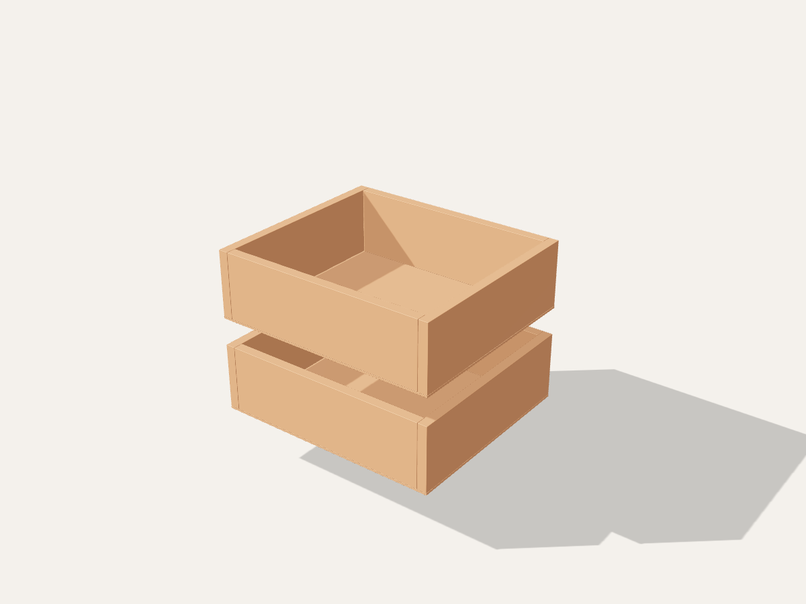
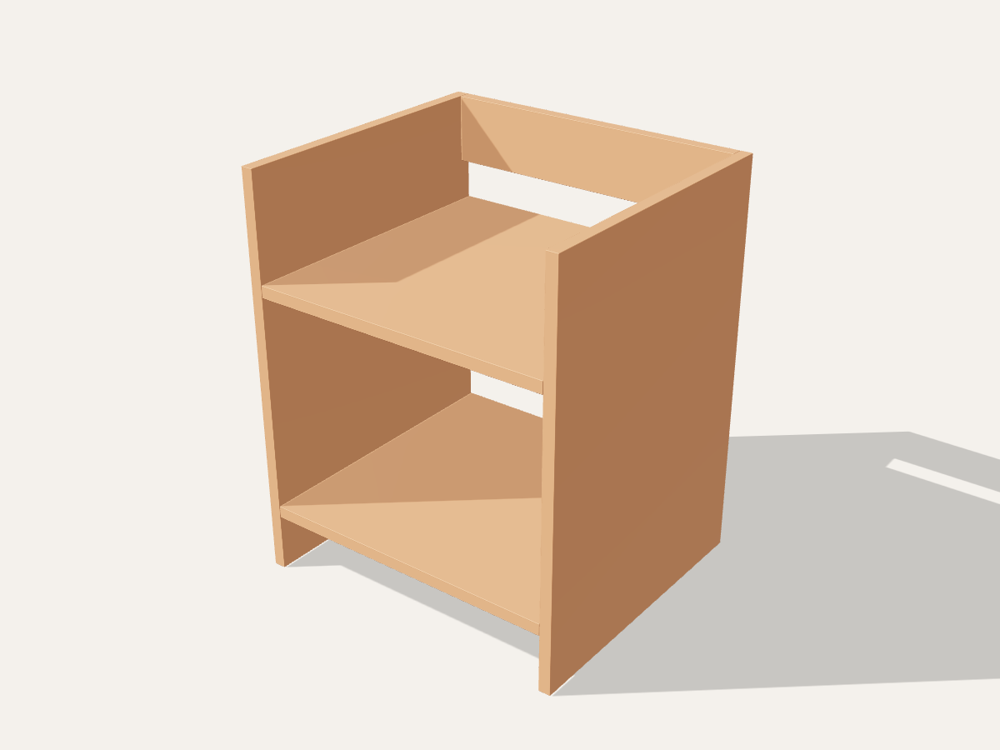
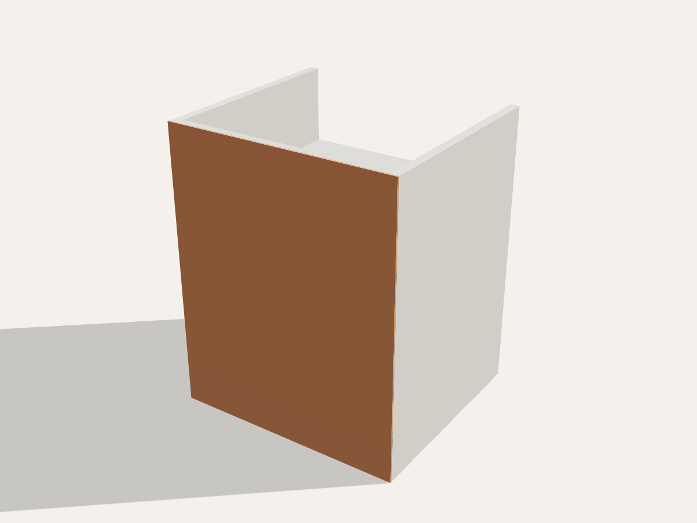
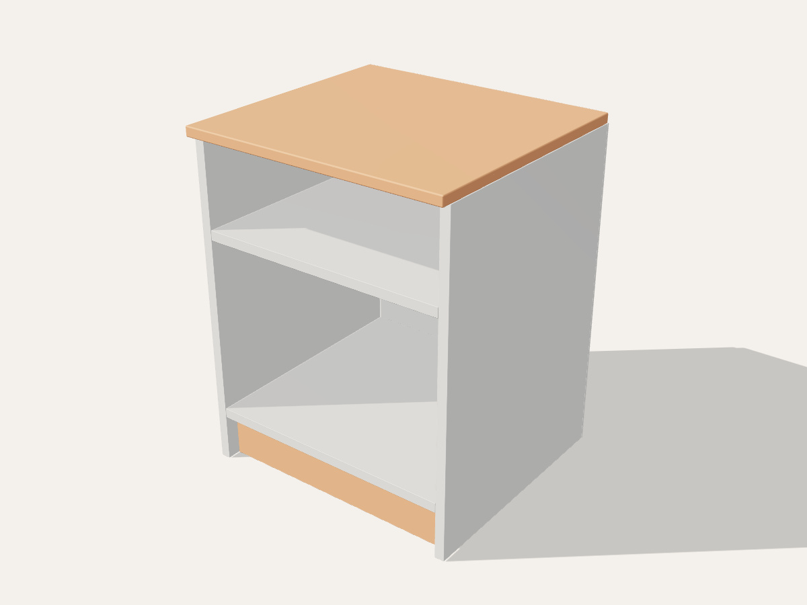
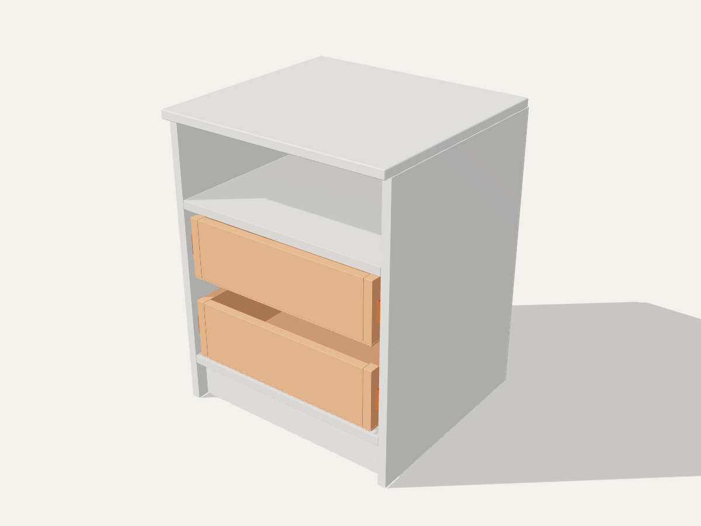
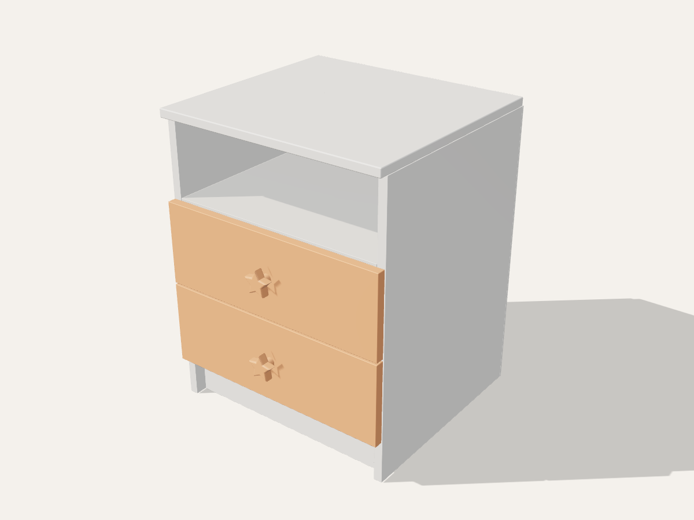